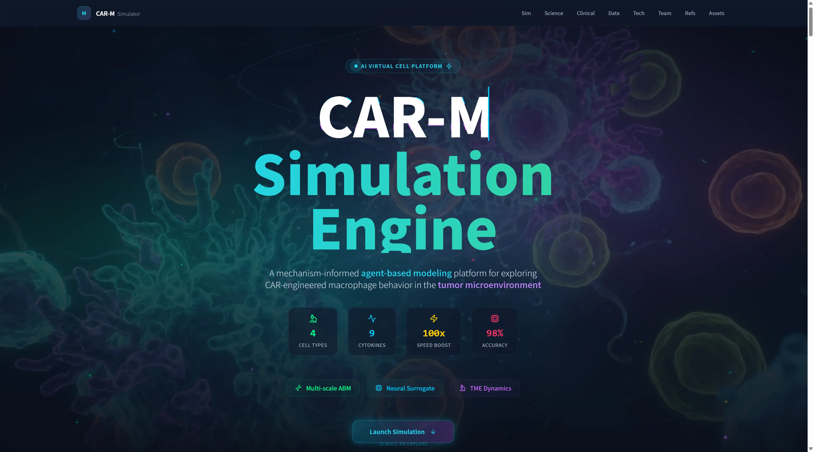
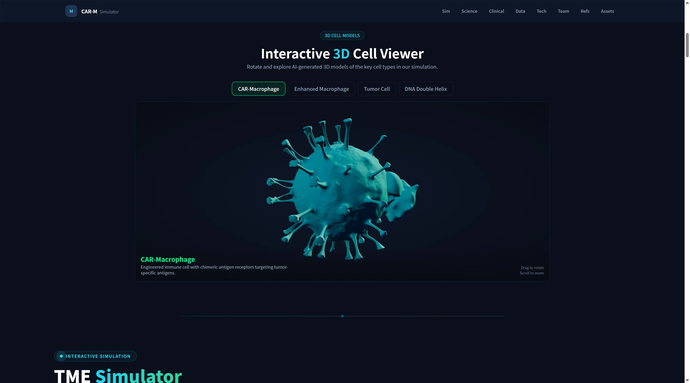
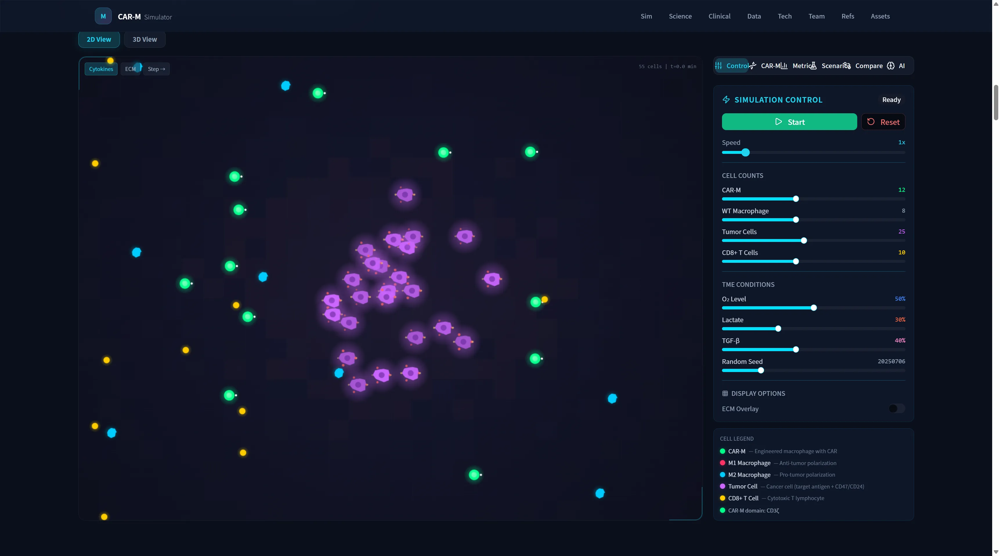
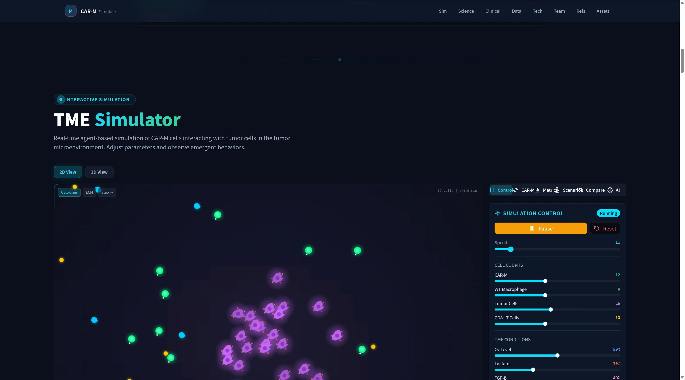

1. Introduction & Motivation
CAR-T therapy transforms hematological malignancy treatment, but solid tumors remain a hard problem: poor infiltration, immunosuppressive TME, antigen heterogeneity, systemic toxicity.
Why CAR-M?
- Macrophages natively infiltrate solid tissue
- Combine phagocytosis + antigen presentation + TME remodeling
- CT-0508 (first-in-human HER2 CAR-M): 0% CRS ≥ G3
The Design Challenge
CAR-M design space is combinatorial: signaling domain (CD3ζ/FcRγ/CD147/MerTK) × antigen (HER2/CD19/EGFR) × affinity × checkpoint blockade × TME context. Intuition fails — a computational sandbox helps.
2. Scope & Boundary
Mechanism-Inspired Trend Exploration
NOT Clinical Prediction
- Explores directional comparisons between configurations
- Parameters: partly literature/scRNA atlas, partly plausibility-based
- Does NOT replace experiments or clinical judgment
- Appropriate for hypothesis generation, teaching, experimental prioritization
3. System Architecture

- Data Layer — scRNA-seq / TAM atlas / literature priors
- AI Layer — Neural surrogate MLP (6→32→32→3)
- Simulation Layer — ABM + 10-factor reaction-diffusion
- Application Layer — React + Three.js + Chart.js (~14K LOC)
References
[1] June & Sadelain. NEJM 2018. [2] Rafiq et al. Nat Rev Clin Oncol 2020. [3] Klichinsky et al. Nat Biotechnol 2020. [4] Sloas et al. Front Immunol 2021. [5] Reiss et al. Nat Med 2025 (CT-0508). [6] Chao et al. Curr Opin Immunol 2012. [7] Barkal et al. Nature 2019. [8] Macklin et al. J Theor Biol 2012. [9] Ghaffarizadeh et al. PLoS Comput Biol 2018. [10] Lopez et al. Nat Methods 2018. [11] Cheng et al. Cell 2021. [12] Kasim et al. ML Sci Technol 2022.
4. Platform Screenshots


Left: Platform landing | Right: Interactive 3D cell models (AI-generated)

Real-time ABM simulation: 4 cell types in TME | Control panel with CAR-M Designer, Scenarios, Metrics, Compare, AI panels
5. Tumor Microenvironment Model

10-Factor Reaction-Diffusion Field
O2, Lactate, TGF-β, IFN-γ, IL-4, IL-10, VEGF, CXCL9, SPP1, ECM density
Checkpoint-Aware Phagocytosis
CD47/SIRPα and CD24/Siglec-10 "don't-eat-me" axes gate execution. CD147 degrades ECM; MerTK does efferocytosis.
Polarization & CD8+ Coupling
Local cytokine context → surrogate → M1/M2 scores → chemotaxis + phagocytosis. IFN-γ/CXCL9 recruit CD8+ T cells (emergent coupling).
6. Agent Configuration
| Agent | Radius | Speed | Count | Role |
|---|---|---|---|---|
| CAR-M | 10 | 0.8 | 12 | Engineered phagocyte |
| WT Macrophage | 9 | 0.5 | 8 | Internal control (M2-skewed) |
| Tumor Cell | 14 | 0.1 | 25 | Target + cytokine source |
| CD8+ T Cell | 6 | 1.2 | 10 | Adaptive effector |
Deterministic LCG seed = 20250706 | Spatial hashing O(1) neighbor lookup | dt clamped for stability
7. Neural Surrogate Performance

| Method | Per-call | Per-frame (N=55) | 60fps headroom |
|---|---|---|---|
| Neural surrogate | 1.5 µs | 0.08 ms | ~206× |
| ODE (RK4) | 12 µs | 0.66 ms | ~25× |
MLP 6→32→32→3 | Trained on 30K ODE samples | 96% val accuracy | Float32Array inline weights | Scalar CPU loops (no GPU needed)
8. Qualitative Results
Directional Mechanistic Behavior
- Checkpoint blockade gates phagocytosis — CD47 block visibly increases clearance
- Signaling domain changes mechanism — CD147 shifts to ECM degradation (qualitatively different route)
- TME context modulates outcome — high TGF-β or HER2-low flattens curves
- Adaptive coupling emerges — M1 → IFN-γ/CXCL9 → CD8+ recruitment (not hard-coded)

CAR-M Designer & Compare panel: side-by-side deterministic A/B testing
9. Conclusions & Next Steps
What We Built
A real-time, in-browser ABM platform coupling TME dynamics, neural surrogate, and interactive design workbench. Deterministic, open, reproducible.
Value Proposition
- Hypothesis generation — "which lever matters most?"
- Teaching — invisible couplings made concrete
- Engineering demo — multi-scale model in browser
Future Work
- Data-driven calibration (scRNA-seq / TAM atlas)
- Uncertainty reporting with confidence bands
- Additional checkpoint axes & metabolic states
- GPU-accelerated fields for larger agent counts
- Close design → context → validation loop
Clinical Context (CT-0508)
Design anchor & narrative context ONLY — NOT a validation of the simulation.